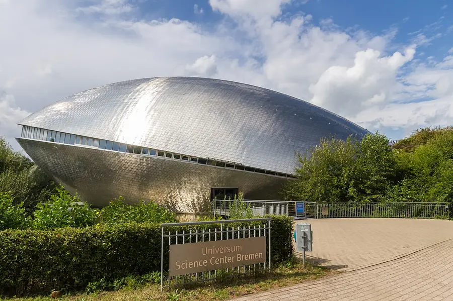

Vormittag · Direkt an der Uni
Universum Bremen
Ein paar Minuten zu Fuß — der riesige silberne Wal ist nicht zu übersehen.
Das beste Museum ist eins, in dem man alles anfassen darf. Über 300 Mitmach-Stationen zu Technik, Mensch und Natur: Blitze, optische Täuschungen, Experimente mit eurem eigenen Körper. Plant locker 2–3 Stunden. Danach: rauf auf den 27-Meter-Turm nebenan.
⚡ Fun Fact: Wal? Muschel? UFO? Die Bremer streiten
seit dem Jahr 2000, was das Gebäude eigentlich darstellt. Der Architekt verrät es nicht.
Praktisch: Mo–Fr ab 9 Uhr, Eintritt 18 € / ermäßigt 12 €.
Gerade läuft die Sonderausstellung „LIEBE“ — ihr wurdet gewarnt. 😄
–:–
In Google Maps öffnen